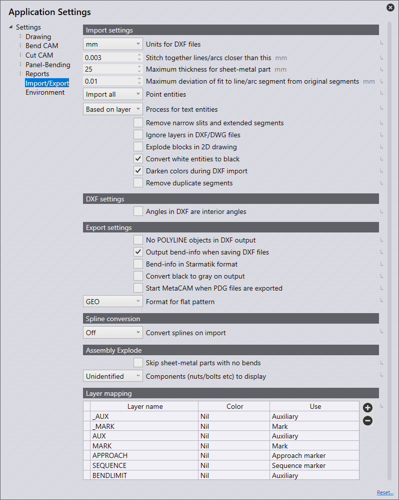

İçe/Dışa Aktarma
Bu bölümde, Import settings konfigürasyonunu ele alacağız.

Ana sayfada Settings
 simgesine tıklayın.
simgesine tıklayın.

Import settings
Bu bölümde, Import settings konfigürasyonunu ele alacağız. Settings simgesine tıklayın. Import/Export öğesine tıklayıp Import settings öğesine gidin.

Units for DXF files - Burada milimetre veya inç olarak ayarlama yapın.
Stitch together lines/arcs closer than this - Bu değeri ayarlayın (0>1mm). Ayar değerinden daha yakındaki hatlar/yaylar içeren bir parçayı içe aktarıyorken yazılım, bunları içe aktarma sırasında otomatik olarak birleştirir.
Maximum thickness for sheet-metal part - Büyük bir sac metal parçayı algılayabilmek için, sac algılama eşik değerinin artırılması gerekecektir. (10>40 mm) Bu, kullanılan birime bağlıdır ve varsayılan durumda otomatik olarak 25 mm veya bir inç şeklinde ayarlanır.
Point entities - Seçilen seçeneğe bağlı olarak, noktaların nasıl içe aktarılacağı belirlenir.
Import all - Tüm noktalar içe aktarılacak ve görüntülenecektir.
Skip points on polylines - Bu, bileşik çizgilerde algılanan tüm noktaları atlar.
Skip all - Bu, içe aktarma sırasında tüm noktaları atlar ve hiçbiri gösterilmez.
Ignore layers in DXF/DWG files - DXF ve DWG çizimleri genelde farklı katmanlarda oluşturulur. Bu ayar yardımıyla yazılım, bu katmanları gözardı eder ve tüm nesneleri varsayılan katmana taşır.
Explode blocks in 2D drawing - İçe aktarma sırasında gruplandırmaları böler
Convert white entities to black - İçe aktarma sırasında beyaz nesneleri siyah nesnelere dönüştürmek için bu ayarı etkinleştirin.
Darken colors during DXF import- İçe aktarma sırasında renkli nesneleri koyulaştırmak için bu ayarı etkinleştirin.
Remove duplicate segments - İçe aktarma sırasında parçadaki tüm tekrarlanan geometrileri kaldırmak için bu ayarı etkinleştirin.
DXF settings
Bu bölümde, DXF settings konfigürasyonunu ele alacağız. Şuna tıklayın: Settings simgesi. Import/Export öğesine tıklayıp DXF settings öğesine gidin.

Angles in DXF are interior angles - DXF’deki açıların açılma açıları olarak işlem görmesi için bu ayarı etkinleştirin.
Export settings
Bu bölümde, Export settings konfigürasyonunu ele alacağız. Settings simgesine tıklayın. Import/Export öğesine tıklayıp Export settings öğesine gidin.

No POLYLINE objects in DXF output - Genelde, DXF’leri dışa aktarırken kapalı konturlar bileşik çizgiler olarak çıktılanır. Bazı CAD sistemleri bu çıktıyı işleyemez. Bu ayar ile yazılım, DXF dosyasını hatlar ve yaylar ile çıkarır. Bu dosyalar her yerde okunabilir; ancak oluşturulan dosyalar daha büyük olup hatlar ile yaylar arasındaki bağlantılar kaybolur.
Output bend-info when saving DXF files - Dışa aktarılan DXF dosyasının çıktısının büküm bilgileriyle birlikte alınması için bu ayarı etkinleştirin.
Bend-info in Starmatik format - Büküm bilgilerini Starmatik formatında çıktılamak için bu anahtarı etkinleştirin. Bu, bir metin öğesinin büküm hattı olacak her bir hattın tam ortasına pozisyonlandığı yerdir.
Convert black to gray on output - 2D verileri dışa aktarıyorken, DXF dosyasındaki nesneler varsayılan olarak siyah renkte çıktılanır. CAD programlarında nesneleri daha iyi tanıyabilmek için, bu ayar aracılığıyla nesneler gri renkte çıktılanır.
Start MetaCAM when PDG files are exported - Bir PDG dosyasının MetaCAM’de otomatik olarak açılabilmesi için bu ayarı etkinleştirin
Format for flat pattern - Düz bir desen dışa aktarılıyorken, bu ayar GEO, DXF veya PDG dosya formatına göre yapılabilir.
Spline conversion
Bu bölümde, Spline conversion ayarlarının konfigürasyonunu ele alacağız. Settings simgesine tıklayın. Şuna tıklayın: Import/Export ve Spline conversion ayarlarına gidin.

Convert splines on import - Buradan, Spline dönüştürme özelliğinin kapalı mı olacağını yoksa Spline’ları hatlara veya yaylara dönüştürmek için mi ayarlanacağını belirleyebilirsiniz. Her iki durumda da, her bir Spline, hat segmentleri veya yay segmentleri içeren tek bir bileşik çizgi nesnesine dönüştürülür.
Node-count computation - Oluşturulacak hat veya yayların sayısı, iki mekanizmadan biri yardımıyla hesaplanır: Delik mesafesi veya sapma.
Length of each line or arc segment - Eğer Düğüm Sayısı hesaplamasında Delik mesafesi seçilirse, bu adım uzunluğu yardımıyla kullanarak Spline’ı bölmek için her bir yay veya hat segmentinin uzunluğunu burada ayarlayabilirsiniz.
Maximum deviation during approximation - Eğer Düğüm Sayısı hesaplamasında Sapma seçilirse, orijinal düzgün Spline ile hat veya yay yaklaşımı arasındaki izin verilen maksimum sapmayı burada ayarlayabilirsiniz. Bileşik çizgi, maksimum hata bu sınır içerisinde kalacak şekilde, mümkün olduğunca az segmentten meydana getirilir.
Assembly Explode
Bu bölümde, Assembly Explode ayarlarının konfigürasyonunu ele alacağız. Settings simgesine tıklayın. Şuna tıklayın: Import/Export; ve Assembly Explode ayarlarına gidin

Skip sheet-metal parts with no bends - Bir montajı parçalarına ayırırken, bu anahtar açıldığında yalnızca büküm hatları bulunan sac parçaları gösterilir. Kapatıldığında, montajdaki tüm parçalar gösterilir.
Components (nuts/bolts etc) to display - Bu ayarı, başka komponentler de içeren bir montajı parçalarına ayırırken hangi seçeneklerin görüntüleneceğini seçmek amacıyla kullanın.
None - Parçalarına ayırma sonrasında sadece sac parçalar görüntülenir, diğer somunlar/pimler görüntülenmez.
Unidentified - Yalnızca yazılımda henüz tanımlanmamış olan komponentler görüntülenir.
All - Tüm komponentler görüntülenir.
Layer mapping

Bu bölümde, Layer mapping konfigürasyonunu ele alacağız. Şuna tıklayın: Settings simgesi. Import/Export öğesine tıklayın ve Layer mapping ayarlarına gidin.
Bu bölümde, yazılıma aktarılan parçalarda kullanılan katmanlar, fonksiyonlarına (kullanımlarına) otomatik olarak eşleştirilebilir.
Eğer içe aktarılan bir parçada bir MARK katmanı varsa; bu, yazılımda Markalama katmanını otomatik olarak kullanacak şekilde ayarlanabilir.
Layer name - Bu, bir parça bu katmanla içe aktarıldığında "Kullan" panelinde ayarlanmış olan fonksiyonu kullanacak katmanın adıdır.
Use - Bu, katmanın fonksiyonelliğidir. Sunulan farklı seçenekler şunlardır:
Standard - Bu, CAM için kullanılacak standart katmandır.
Auxiliary - Yardımcı katman, CAM için kullanılmaz.
Mark - Bu katmandaki öğeler markalanır, kesim yapılmaz.
Approach marker - Lazer yaklaşma pozisyonunu gösteren nokta öğeleri.
Sequence marker - Konturların sıralama düzenini gösteren metin işaretleri.
Forming center - Form verme için merkez işareti (nokta veya küçük L).
Forming foot print - Bir form verme için anahatlar (ayak izi).
Evaporate - Bu katman, folyo yanmasını ayırt etmek için kullanılır.
Dot marking - Bu katman, QR kodları için kullanılır.
Info - Bu, yalnızca bilgilendirme temelli bir katmandır.